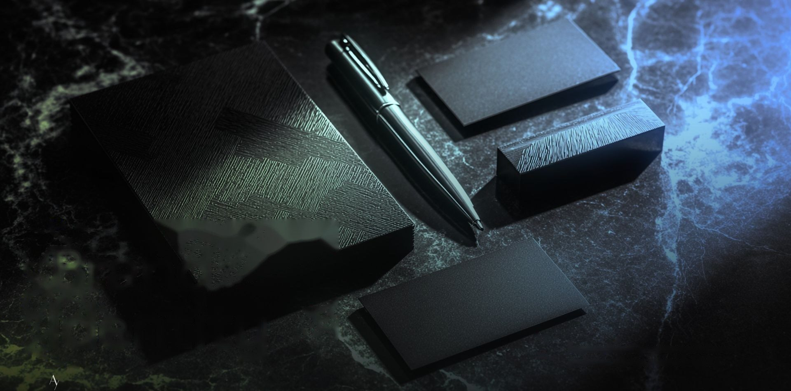
أعمال
مختارة
هويات، حملات سوشيال، مطبوعات وعروض — نماذج من أعمالنا مع علامات وجهات سعودية.
مجموعة مختارة من أعمال AY. Design على مدى أكثر من عشر سنوات: هويات بصرية كاملة، وحملات سوشيال ميديا، ومطبوعات وملفات تعريفية، وعروض تقديمية — لجهات حكومية وشركات وعلامات تجارية في السعودية والخليج. كل مشروع هنا نُفّذ من الفكرة إلى التسليم: البحث، والاتجاه الفني، والتصميم، ثم ملفات الإنتاج الجاهزة للطباعة أو النشر. استخدم التصنيفات أدناه لتصفية الأعمال حسب الخدمة، واضغط أي عمل لتكبيره.
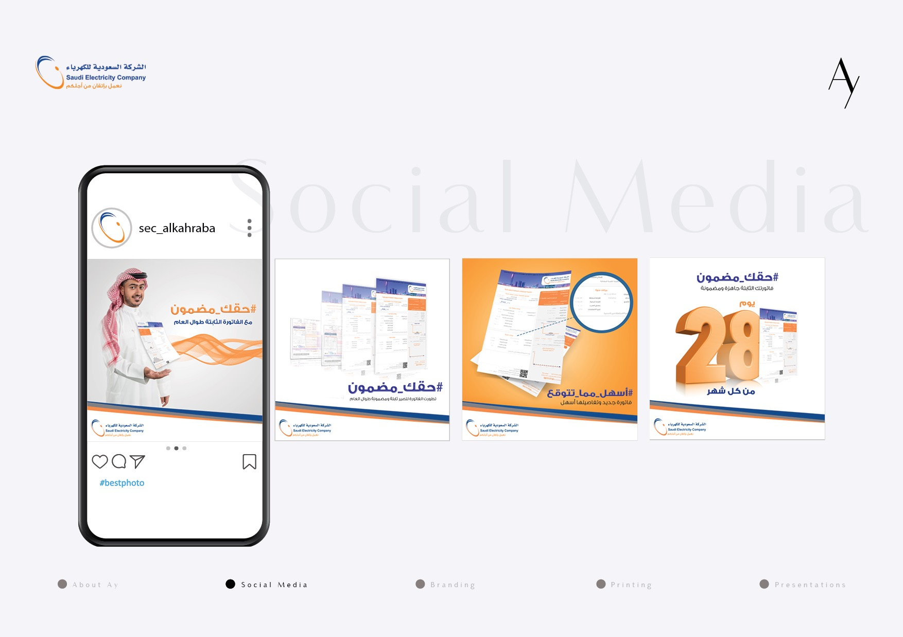
حملة سوشيال ميديا للفاتورة الثابتة تحت وسمي #حقك_مضمون و#أسهل_مما_تتوقع، مع كاروسيل يشرح الفاتورة الجديدة وتفاصيلها ويذكّر بصدورها ٢٨ يوماً من كل شهر. بُني التصميم على برتقالي وكحلي الهوية، وشريط موجي أسفل كل منشور يوحّد الحملة بصرياً.
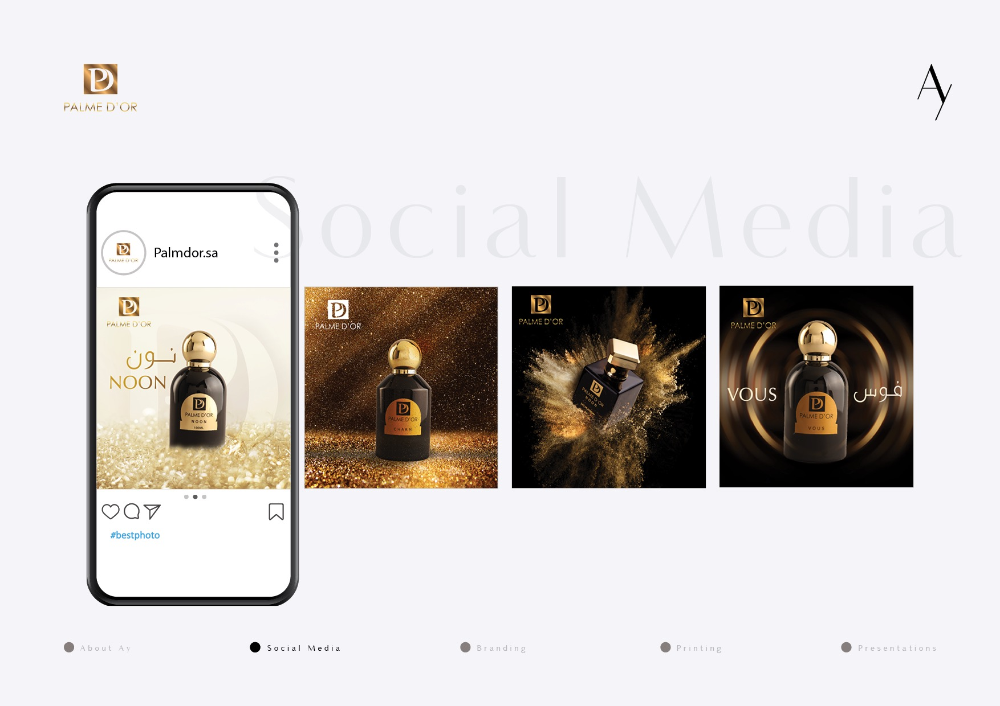
محتوى بصري لعطور Palme D'Or: كل عطر — نون، شارم، فوس — صُوّر على خلفية تخدم شخصيته، من البريق الذهبي إلى انفجار المسحوق على الأسود. الذهبي والأسود يحملان فخامة العلامة، والاسم يظهر بالعربية واللاتينية معاً.
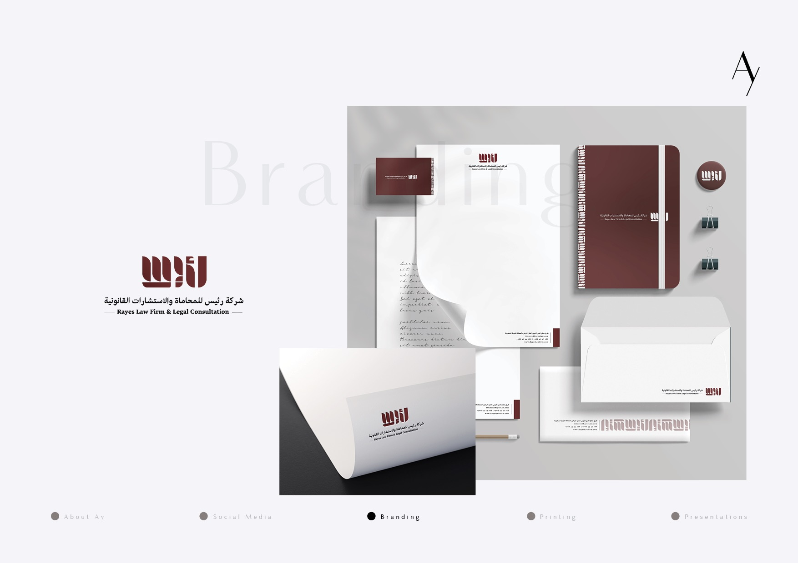
هوية بصرية كاملة لشركة رئيس للمحاماة والاستشارات القانونية: شعار عربي بحروف كوفية هندسية بالعنّابي، ممتد على نظام قرطاسية كامل — بطاقات أعمال، أوراق رسمية، مظاريف، دفتر، وختم. اللون الواحد والحرف الحاد يعطيان الثقل الذي يليق بمكتب قانوني.
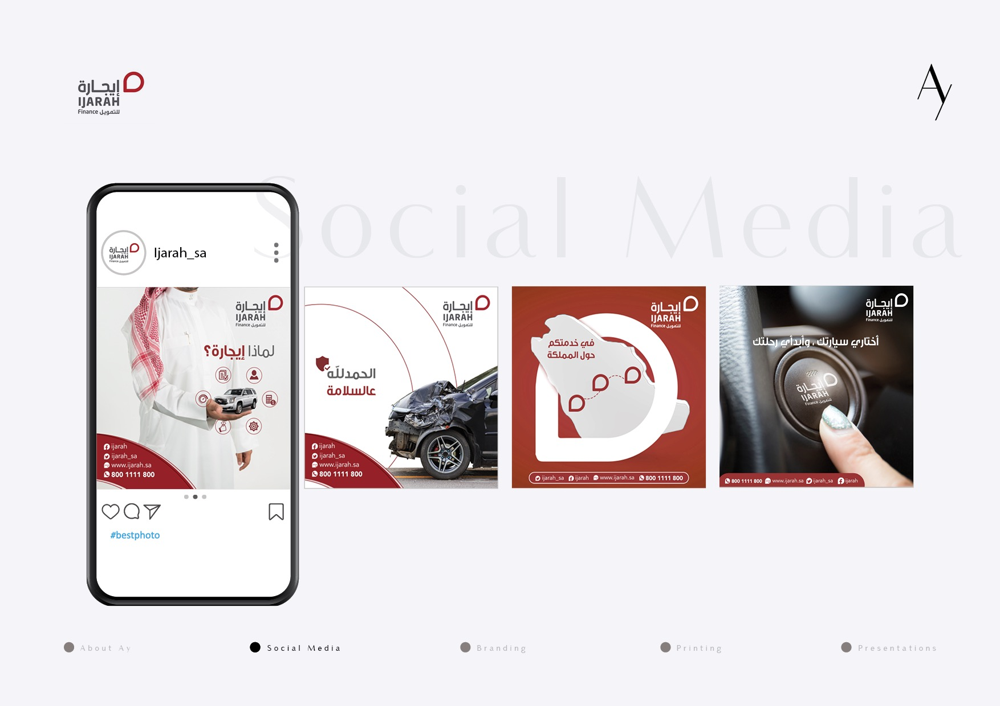
محتوى مستمر لإيجارة للتمويل، استُخدم فيه حرف الشعار نفسه كإطار يحتضن المحتوى — خريطة المملكة لتغطية الفروع، وزر تشغيل السيارة لرسالة «أختاري سيارتك». الأحمر والأبيض ثابتان، وشريط التواصل أسفل كل منشور يبقي الرقم الموحّد في متناول اليد.
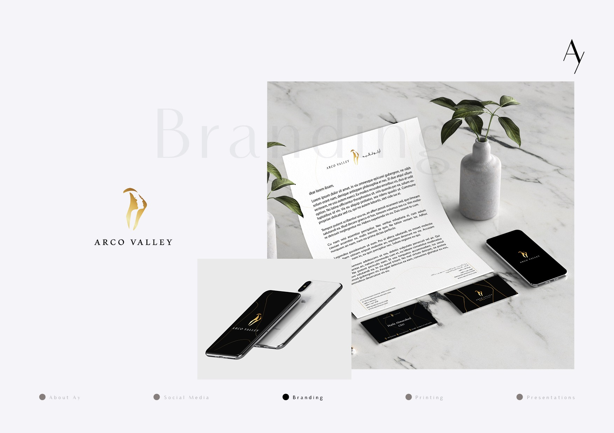
هوية بصرية لـ Arco Valley العقارية: علامة مجرّدة بتدرّج ذهبي توحي بالوادي والقوس معاً، مع خط لاتيني رفيع. النظام يقوم على الأسود والذهبي عبر القرطاسية والبطاقات وواجهات الجوال — لغة تليق بالعقار الفاخر.
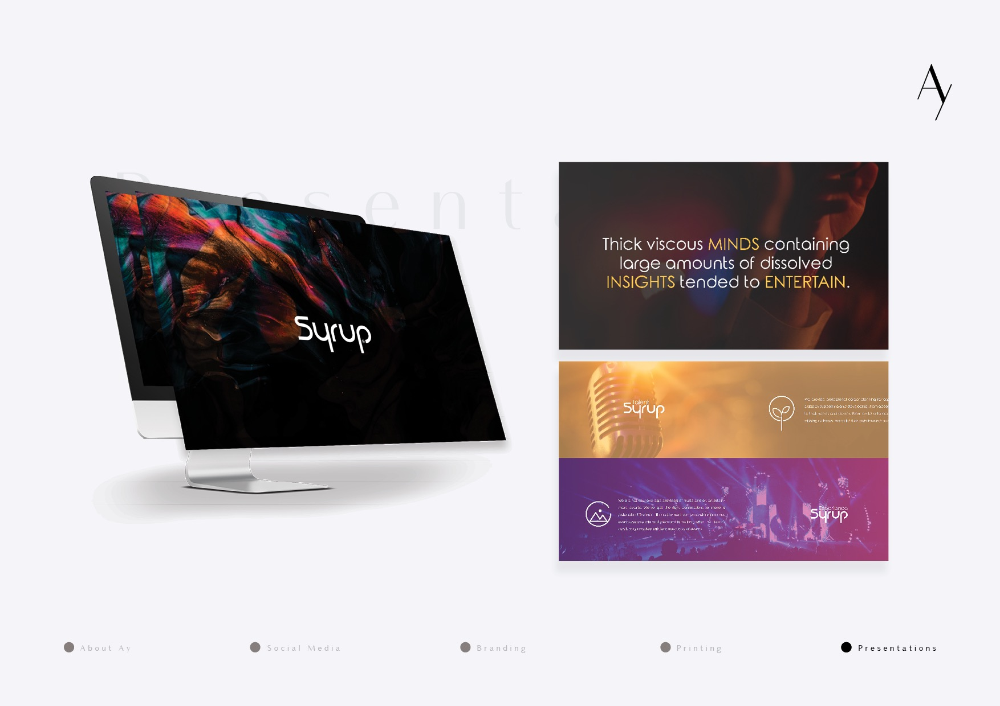
عرض تقديمي لشركة Syrup الترفيهية: غلاف داكن بلوحة سائلة متعددة الألوان، شعار بحروف مدوّرة مخصصة، وشرائح تعرّف بالأذرع المختلفة — Syrup Talent وSyrup Experience — بصور حفلات وتدرّجات مشبعة. العرض يبيع الطاقة قبل أن يبيع المعلومة.
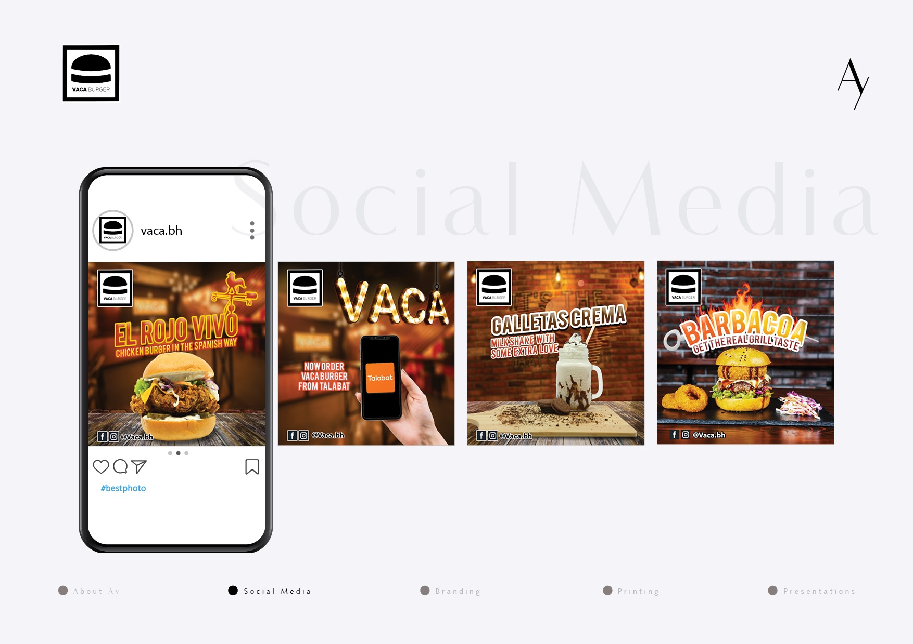
محتوى سوشيال لمطعم VACA Burger بأسماء أصناف إسبانية — El Rojo Vivo وBarbacoa وGalletas Crema. التصوير على الطوب والخشب بإضاءة دافئة، وخط عريض بحدود ملوّنة يجعل كل منشور يُقرأ بسرعة على الجوال، إضافة إلى إعلان توفّر الطلب عبر طلبات.
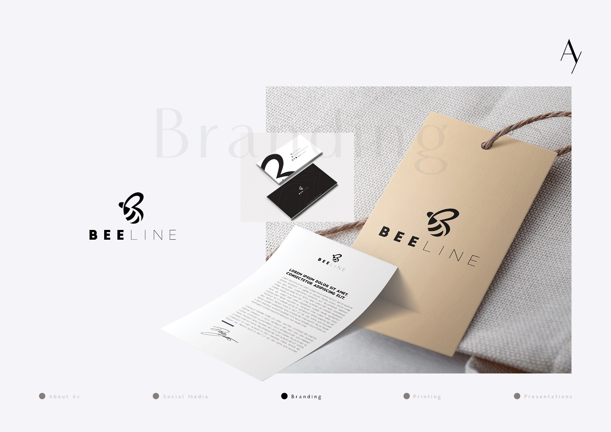
هوية لماركة BeeLine للأزياء: مونوغرام يجمع حرف B وشكل النحلة في خط واحد متصل، وشعار يوازن بين BEE العريض وLINE الرفيع. طُبّق على تعليقة كرتونية بحبل طبيعي وبطاقات أعمال بالأبيض والأسود — بساطة تناسب الملبس.
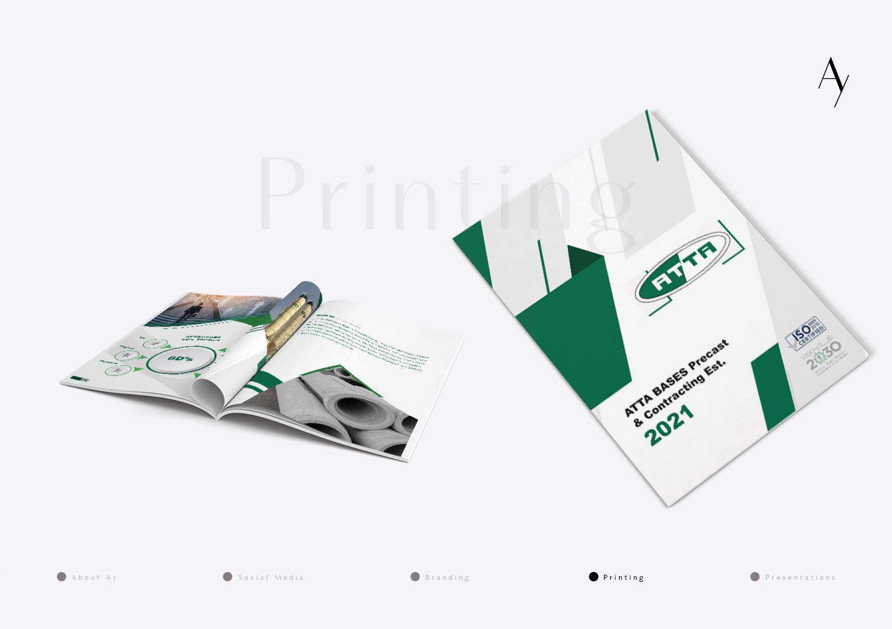
ملف تعريفي مطبوع لمؤسسة ATTA BASES للخرسانة سابقة الصب والمقاولات. الغلاف يقطع الأخضر والأبيض بزوايا حادة تعكس طبيعة المنتج، والداخل يوازن بين صور المصنع وإنفوجرافيك يلخّص القدرات، مع شارتي ISO ورؤية ٢٠٣٠.
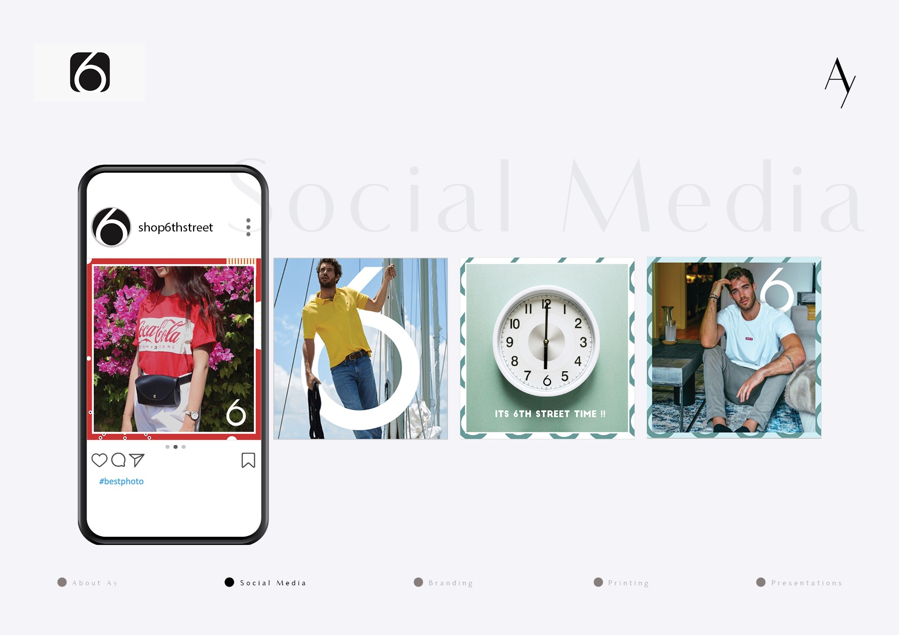
محتوى سوشيال لمتجر 6th Street للأزياء، مبني على رقم ٦ من الشعار بوصفه عنصراً تصميمياً متكرراً — يظهر خلف العارض، وداخل مينا الساعة، وفي زاوية الإطار. كل منشور يغيّر لونه وإطاره حسب صورته، فيبقى الغريد متنوعاً ومترابطاً.
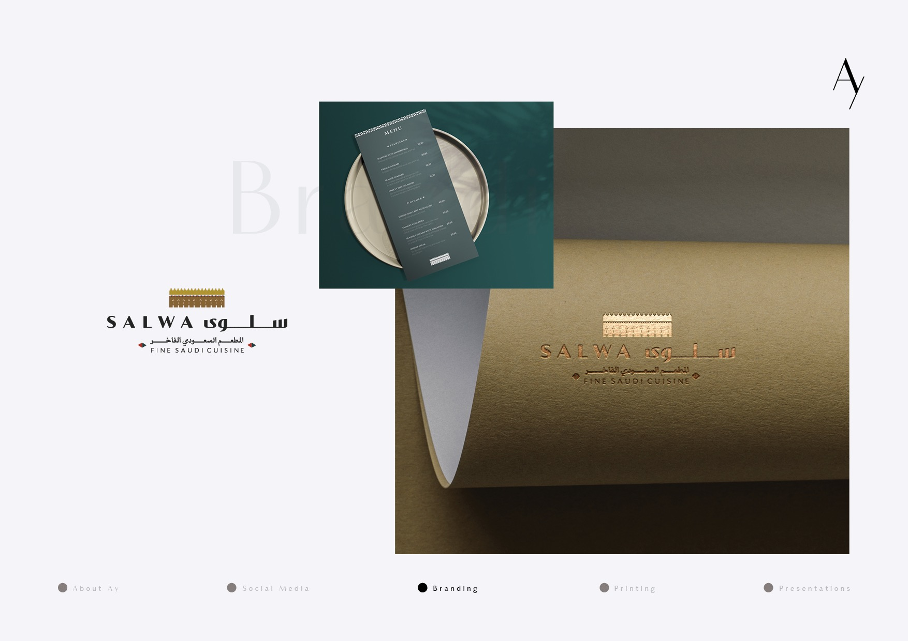
هوية لمطعم سلوى، المطعم السعودي الفاخر: الشعار يجمع الاسم بالعربية واللاتينية تحت زخرفة نجدية مستوحاة من شُرفات الطين. نُفّذ بالذهبي على ورق كرافت محفور، مع قائمة طعام بالأخضر الداكن — تراث محلي بمعالجة معاصرة.
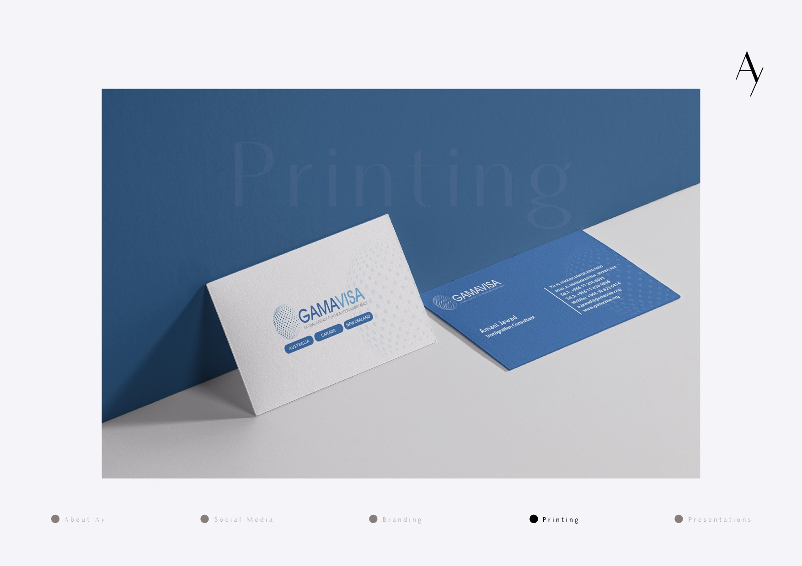
بطاقات أعمال لوكالة GamaVisa لخدمات الهجرة. الكرة المنقّطة في الشعار تمتد كنقش على خلفية البطاقة، والوجهات الثلاث — أستراليا وكندا ونيوزيلندا — تظهر كأزرار واضحة. أزرق وأبيض على ورق محبّب يعطي ملمساً يناسب خدمة استشارية.
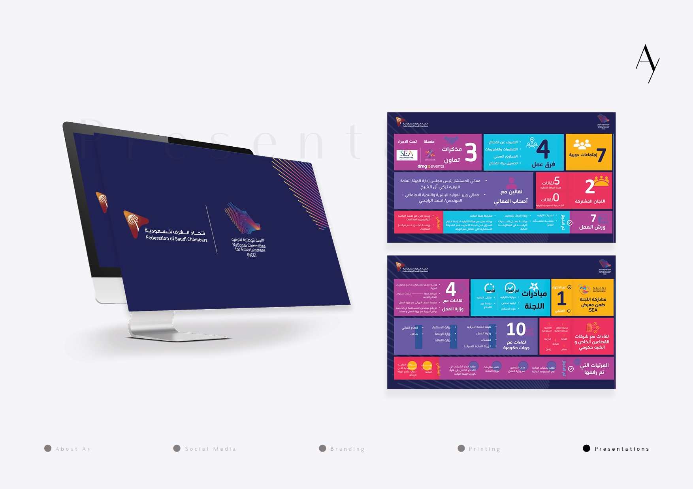
عرض تقديمي لاتحاد الغرف التجارية السعودية واللجنة الوطنية للترفيه. الغلاف كحلي عميق بخطوط متدرّجة، والشرائح الداخلية تحوّل التقرير إلى لوحة مؤشرات: مربعات ملوّنة تحمل الأرقام الكبيرة — مذكرات التعاون، فرق العمل، اللقاءات الحكومية — فتُقرأ الحصيلة في ثوانٍ.
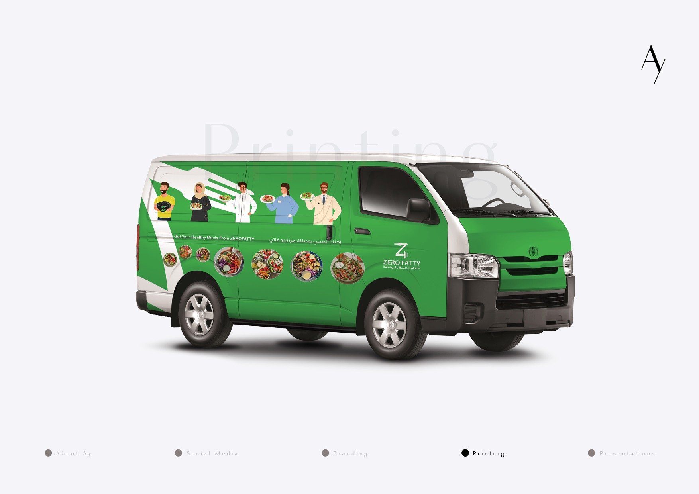
رابّ سيارة توصيل لـ Zero Fatty لوجبات الصحة والرشاقة. الأخضر يغطي الهيكل وتقطعه شوكة بيضاء كبيرة، مع شخصيات مرسومة تحمل الأطباق وصور وجبات داخل دوائر، والرسالة بالعربية والإنجليزية. إعلان متحرك يعمل في الشارع طوال اليوم.
مشروعك
هو التالي.
شفت أعمالنا؟ خلنا نبدأ شغلك. تواصل معنا وناقشنا فكرتك — أول استشارة مجانية.
ابدأ مشروعك على واتساب